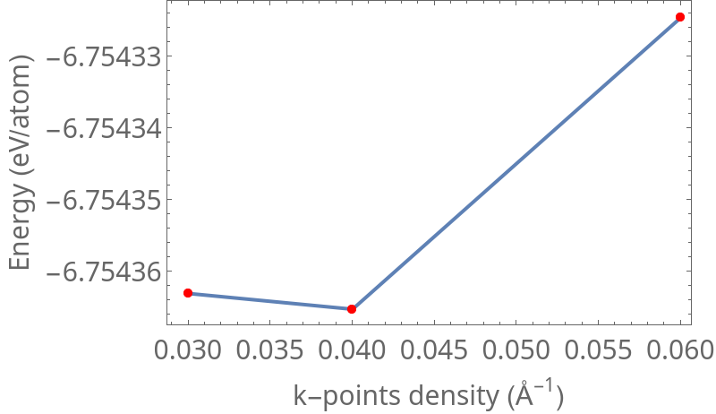
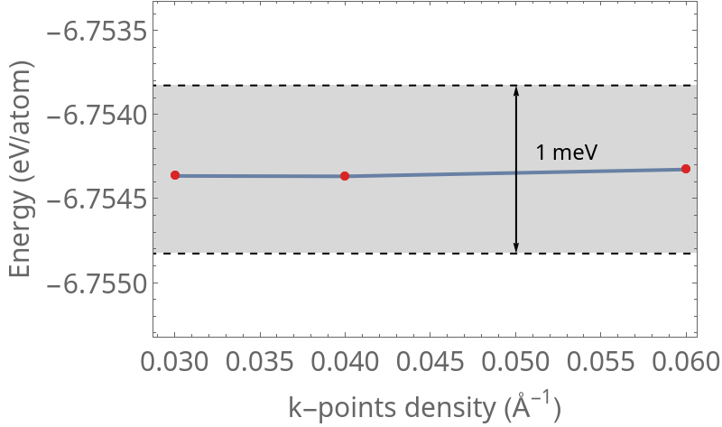
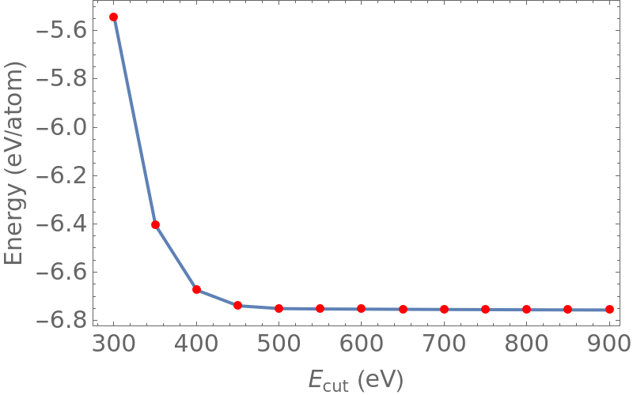
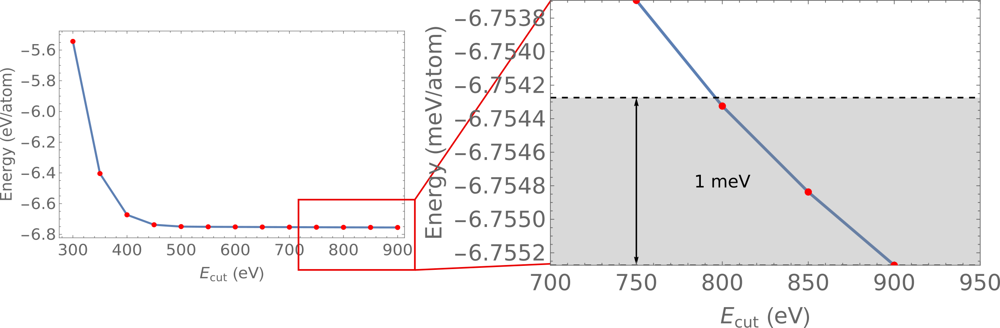

We sample k-point densityes between $0.03\leq\Delta k \leq 0.06$.
We sample k-point densityes between $0.03\leq\Delta k \leq 0.06$.
We sample k-point densityes between $0.03\leq\Delta k \leq 0.06$.

... and we perform the convergency test so that
that the total energy change of the k-point density is $< 1$meV
We sample k-point densities between $0.03\leq\Delta k \leq 0.06$.
Finally, choosing a k-point density of $\Delta k=0.06 \AA^{-1}$ for the bulk C-S-H
(equivalent to a $1\times 1\times 1$ k-point mesh) provides a fine enough mesh
so that
the results converge within the criteria while keeping computational efficiency.
We sample cut-off energies between $300\leq E_{cut} \leq 900$ eV.
We sample cut-off energies between $300\leq E_{cut} \leq 900$ eV.
We sample cut-off energies between $300\leq E_{cut} \leq 900$ eV.
We sample cut-off energies between $300\leq E_{cut} \leq 900$ eV.
We see that at $E_{cut}=800$ eV we achieve a convergence of
the total energy of $1$ meV.
We sample cut-off energies between $300\leq E_{cut} \leq 900$ eV.
We see that at $E_{cut}=800$ eV we achieve a convergence of
the total energy of $1$ meV.
Thereby, we choose $E_{cut}=800$ eV as the optimal cut-off
energy for further calculations.